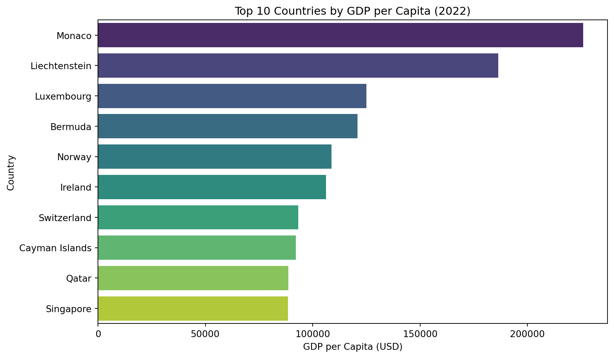
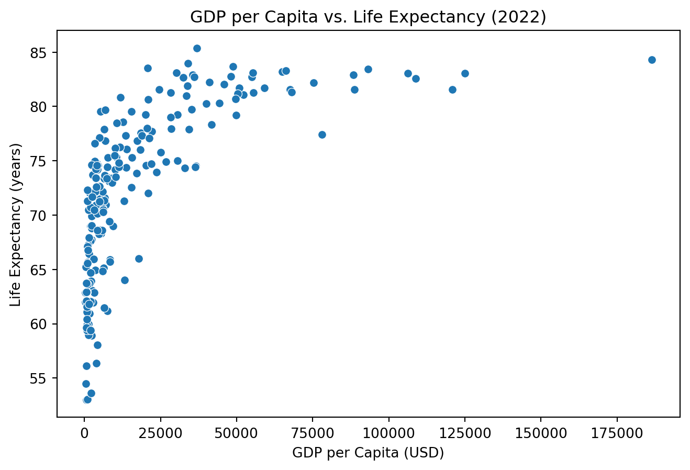
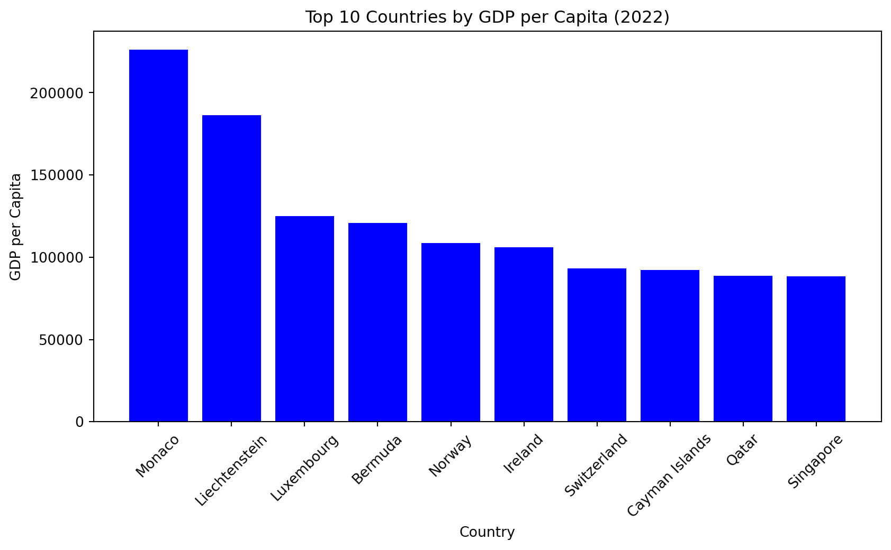

# Task 2
# Import data
import pandas as pd
import wbgapi as wb
import matplotlib.pyplot as plt
import seaborn as sns
wdi_data = pd.read_csv("/Users/noora_ni0321/Desktop/QTM 350/Assignment 5/wdi.csv")QTM 350 Assignmen 5
# Define the indicators to download
indicators = {
'gdp_per_capita': 'NY.GDP.PCAP.CD',
'gdp_growth_rate': 'NY.GDP.MKTP.KD.ZG',
'inflation_rate': 'FP.CPI.TOTL.ZG',
'unemployment_rate': 'SL.UEM.TOTL.ZS',
'total_population': 'SP.POP.TOTL',
'life_expectancy': 'SP.DYN.LE00.IN',
'adult_literacy_rate': 'SE.ADT.LITR.ZS',
'income_inequality': 'SI.POV.GINI',
'health_expenditure_gdp_share': 'SH.XPD.CHEX.GD.ZS',
'measles_immunisation_rate': 'SH.IMM.MEAS',
'education_expenditure_gdp_share': 'SE.XPD.TOTL.GD.ZS',
'primary_school_enrolment_rate': 'SE.PRM.ENRR',
'exports_gdp_share': 'NE.EXP.GNFS.ZS'
}
# Get the list of country codes for the "World" region
country_codes = wb.region.members('WLD')
# Download data for countries only in 2022
df = wb.data.DataFrame(indicators.values(), economy=country_codes, time=2022, skipBlanks=True, labels=True).reset_index()
# Delete the 'economy' column
df = df.drop(columns=['economy'], errors='ignore')
# Create a reversed dictionary mapping indicator codes to names
# Rename the columns and convert all names to lowercase
df.rename(columns=lambda x: {v: k for k, v in indicators.items()}.get(x, x).lower(), inplace=True)
# Sort 'country' in ascending order
df = df.sort_values('country', ascending=True)
# Reset the index after sorting
df = df.reset_index(drop=True)
# Display the number of rows and columns
print(df.shape)
# Display the first few rows of the data
print(df.head(3))
# Save the data to a CSV file
df.to_csv('wdi.csv', index=False)(217, 14)
country inflation_rate exports_gdp_share gdp_growth_rate \
0 Afghanistan NaN 18.380042 -6.240172
1 Albania 6.725203 37.197085 4.826688
2 Algeria 9.265516 30.808979 3.600000
gdp_per_capita adult_literacy_rate primary_school_enrolment_rate \
0 357.261153 NaN NaN
1 6846.426143 98.5 96.371231
2 4961.552577 NaN 108.343933
education_expenditure_gdp_share measles_immunisation_rate \
0 NaN 56.0
1 2.744330 86.0
2 4.749247 79.0
health_expenditure_gdp_share income_inequality unemployment_rate \
0 NaN NaN 14.100
1 NaN NaN 10.137
2 NaN NaN 12.346
life_expectancy total_population
0 62.879 40578842.0
1 76.833 2777689.0
2 77.129 45477389.0 Explanatory Data Analysis
# Task 3
# Select relevant indicators
list = ["country", "gdp_per_capita", "life_expectancy", "unemployment_rate"]
eda_data = df[list]
# Summary statistics
summary = eda_data.describe()
summary| gdp_per_capita | life_expectancy | unemployment_rate | |
|---|---|---|---|
| count | 207.000000 | 209.000000 | 186.000000 |
| mean | 20520.336828 | 72.416519 | 7.227344 |
| std | 30640.741594 | 7.713322 | 5.844462 |
| min | 250.634225 | 52.997000 | 0.130000 |
| 25% | 2599.752468 | 66.782000 | 3.478000 |
| 50% | 7606.237525 | 73.514634 | 5.334000 |
| 75% | 27542.145523 | 78.475000 | 9.261750 |
| max | 226052.001905 | 85.377000 | 35.359000 |
Summary of Findings
The dataset highlights significant global disparities in economic and social indicators.
- GDP per capita averages $20,520, but a high standard deviation ($30,640) and a maximum of $226,052 indicate strong income inequality.
- Life expectancy is more consistent, averaging 72.42 years, with most countries between 67 and 78 years.
- Unemployment rates vary widely, averaging 7.23%, with extremes from 0.13% to 35.36%.
Overall, economic disparities are stark, while life expectancy shows more stability.
Visualization
# Task 4
# Bar Chart: GDP per Capita by Country
# Sort data by GDP per capita
sorted_data = eda_data.sort_values("gdp_per_capita", ascending=False).head(10)
plt.figure(figsize=(10, 6))
sns.barplot(y=sorted_data["country"], x=sorted_data["gdp_per_capita"], palette="viridis")
plt.xlabel("GDP per Capita (USD)")
plt.ylabel("Country")
plt.title("Top 10 Countries by GDP per Capita (2022)")
plt.savefig("gdp_per_capita_bar.png")
# Save the figure before showing it
plt.savefig("top_10_gdp.png", dpi=300)
plt.show()/var/folders/w1/1hz6sx6n2l58w0s131c4kg100000gn/T/ipykernel_70822/217072998.py:8: FutureWarning:
Passing `palette` without assigning `hue` is deprecated and will be removed in v0.14.0. Assign the `y` variable to `hue` and set `legend=False` for the same effect.

# Scatter Plot: GDP per Capita vs Life Expectancy
plt.figure(figsize=(8, 5))
sns.scatterplot(x=wdi_data["gdp_per_capita"], y=wdi_data["life_expectancy"])
plt.xlabel("GDP per Capita (USD)")
plt.ylabel("Life Expectancy (years)")
plt.title("GDP per Capita vs. Life Expectancy (2022)")
plt.savefig("gdp_vs_life_expectancy.png")
plt.savefig("gdp_vs_life.png", dpi=300)
plt.show()
# Task 5
summary_table = eda_data.groupby("country").mean().reset_index()
summary_table.head(10)| country | gdp_per_capita | life_expectancy | unemployment_rate | |
|---|---|---|---|---|
| 0 | Afghanistan | 357.261153 | 62.879 | 14.100 |
| 1 | Albania | 6846.426143 | 76.833 | 10.137 |
| 2 | Algeria | 4961.552577 | 77.129 | 12.346 |
| 3 | American Samoa | 18017.458938 | NaN | NaN |
| 4 | Andorra | 42414.059009 | NaN | NaN |
| 5 | Angola | 2929.694455 | 61.929 | 14.602 |
| 6 | Antigua and Barbuda | 20117.765331 | 79.236 | NaN |
| 7 | Argentina | 13935.681111 | 76.064 | 6.805 |
| 8 | Armenia | 6571.974455 | 73.372 | 13.379 |
| 9 | Aruba | 30559.533535 | 74.992 | NaN |
# Task 6
# Bar Chart - Top 10 Countries by GDP per Capita
top_countries = df.nlargest(10, 'gdp_per_capita')
plt.figure(figsize=(10,5))
plt.bar(top_countries['country'], top_countries['gdp_per_capita'], color='blue')
plt.xlabel("Country")
plt.ylabel("GDP per Capita")
plt.title("Top 10 Countries by GDP per Capita (2022)")
plt.xticks(rotation=45)
plt.show()